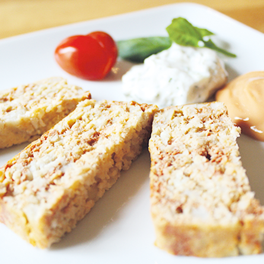

Temps de préparation : 20 minutes. Temps de cuisson : 30 minutes.
Tu n’aimes pas le poisson ? C’est parce que tu ne connais pas le pain de poisson ! C’est une recette simple et bonne que tu pourras cuisiner avec tes parents et qui te fera changer d’avis sur le poisson !

Les ingrédients
600g de filets de cabillaud
1 petit pot de concentré de tomate
5 œufs
Du court-bouillon
Du sel et du poivre
La recette
Demande à un adulte de faire bouillir de l’eau avec du court-bouillon afin de commencer la recette. Puis plonge le poisson 8 à 10 minutes dans le bouillon, il aime bien les jacuzzis !
Egoutte les filets puis émiette-les, avec une fourchette c’est beaucoup plus simple.
Demande à un adulte de préchauffer le four à 180°. Dans un récipient, verse le concentré de tomates puis les œufs et mélange le tout. N’oublie pas de saler et de poivrer ta préparation.
Beurre le moule à gâteau. Tu dois ensuite alterner avec une couche de poisson et une couche du mélange œufs-tomates. La préparation doit être terminée par une couche de tomates. Fait cuire la préparation pendant 30 minutes au four au bain marie. N’oublie pas de couvrir avec une feuille d’aluminium à la mi-cuisson.
Tu peux le servir froid avec une sauce cocktail (ketchup + mayonnaise) ou du Tzatzíki.
Tu vois comme ça à l’air bon ? Régale-toi sans plus attendre !